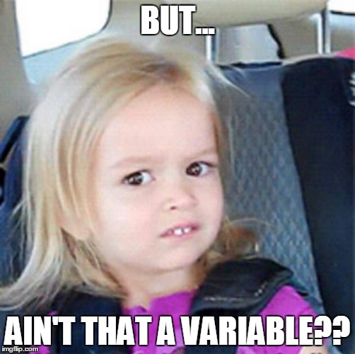
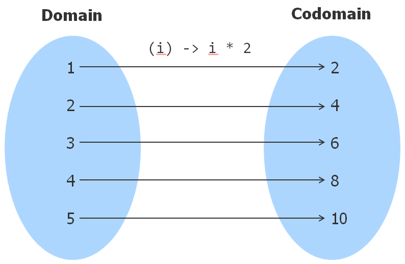
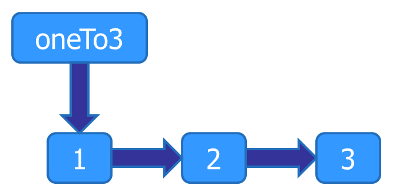
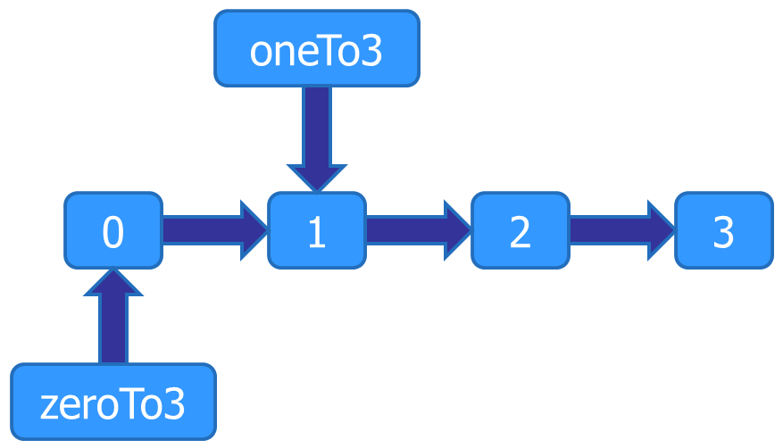
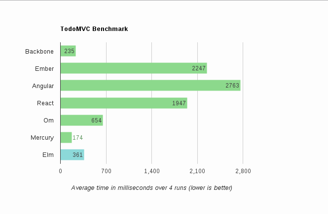

The Renaissance of Functional Programming
Joe Barnes
Follow along at http://localhost
Powered by
- Trends in computing technology
- How is functional programming different?
- How do I apply functional programming?
- What functional programming improves
So what's going on in computing these days?
Moore's law is the observation that, over the history of computing hardware, the speed of integrated circuits doubles approximately every two years.
FALSE
Moore's law is the observation that, over the history of computing hardware, the
speed of
number of transistors on
integrated circuits doubles approximately every two years.
That has mostly continued, but the speed up is over.

"The free lunch is over!!!"
-Some C/C++ guy named Herb Sutter
More cores, not more speed
“C++ has been designed for single thread programming, and parallel programming requires a revolutionary rather than evolutionary change.
Two words: data races.”
-Bartosz Milewski (another C++ guy, who happens to look like Tony Iommi)
“The programmer must ensure read and write access to objects is properly coordinated (or "synchronized") between threads.”
-Java Concurrency | Wikipedia

The developer bears the cognitive load of solving the business problem and juggling shared mutable state.
A data race occurs when two concurrent threads access a shared variable and when
- at least one access is a write and
- the threads use no explicit mechanism to prevent the accesses from being simultaneous.
Recipe
Recipe
- Two concurrent threads → Here to stay
Recipe
- Mechanism not used → Programmer error, also here to stay
Recipe
- At least one write to a variable → Well there's an idea...

More specifically, eliminate writes after reads.
- Mark everything const / final
- No more reassigning names
- No more variables
Revoking powers/freedoms is not a new thing in software.
1968 – Structured Programming
- Edsger Dijkstra writes Go To Statement Considered Harmful
- Revoked the goto
1966 – Object Oriented Programming
- Ole-Johan Dahl and Kristen Nygaard create Simula 67
- Revoked the need for function pointers
- Modern OO constrains visibility/scope
1957 – Functional Programming
- John McCarthy creates Lisp based on Alonzo Church's Lambda Calculus circa 1930's
- Revokes re-assignments and mutation (well, it never had them in the first place)

Actually, I bet you've written something like this before...
$ find . -name *.java | xargs grep -l "function" | wc –l
# A function returning a list of strings
# A function filtering a list of strings
# A function that returns the size of a list
Even managers can do it.


An expression is said to be referentially transparent if it can be replaced with its value without changing the behavior of a program
(in other words, yielding a program that has the same effects and output on the same input).
-Somebody smart on Wikipedia
$ find . -name *.java | \
$ xargs grep -l "function" | \
$ wc –l
$ [Functions.java, Lambdas.java, Objects.java] | \
$ xargs grep -l "function" | \
$ wc –l
$ [Functions.java, Lambdas.java] | \
$ wc –l
$ 2
By giving ourselves a constraint, we gain a new power

Contrast this expression-oriented approach with the statement-oriented programming languages approach
which describes computation in statements which mutate the state of the running program.
But what if I need variables to solve my problem??

Strictly (i.e. mathematically) speaking, functions never mutate anything.
(i) -> i * 2
is an expression for describing a function.

To be precise, a function is a subset of the cross-product of the domain and codomain.
It's just that (i) -> i * 2 is a far-more robust representation than...
{ (1, 2), (2, 4), (3, 6), (4, 8), (5, 10), ... }
So that's it? Just slap const / final everywhere and use fancy libraries?
It doesn't sound like the revolutionary change Milewski wanted.
Otherwise we could just summarize functional programming as merely the logical conclusion of best practices.
Perhaps, but that conclusion is so strong it changes the fundamental design of our languages!


With functional programming being better suited to take advantage of modern hardware advances,
we're seeing a steady uptake in languages which encourage the paradigm.
Really there's more to it than simplifying concurrency
Functional programming simply never had certain problems in the first place
From conception, functional programming is a simpler paradigm.
Consider the reassignment of names (variables) again.
The programmer must juggle both time and value
Less simple than only value
| Time | Value |
| 0 | 1 |
| 1 | 1 |
| 2 | 2 |
| 3 | 6 |
| 4 | 24 |
| 5 | 120 |
Much like how garbage collection frees developers from juggling resource allocation along with business logic.
It depends...
Garbage collection has a cost, so what is the cost of immutability?



Functional programming is far more than just eliminating mutation
It is programming at a higher-level of abstraction
The purpose of abstraction is not to be vague,
but to create a new semantic level in which one can be absolutely precise.
–Edsger W. Dijkstra
The higher level of abstraction coupled with greater constraints yields a code base that is
- Simpler to reason about
- Composeable
A constraint at one level gives us freedom and power at a higher level.
-Some Scala guy named Rúnar Bjarnason
size(List<Integer>) has more power available, but constrains the usages
size(List<A>) has constrained its power, offering more power to the caller
By constraining unneeded power at the lowest level (the language), we preserve the maximum possible power
for the higher levels => Composition
Functional programming is steeped a culture of simplifying by separating concerns (such as time from values)
and constraining lower level power to produce composeable software
It requires a tremendous amount of skill and effort to construct from polymers...
...but even a child can construct a spaceship when the polymers are constrained to the shape of Legos.
So join the Renaissance for some good old-fashioned fun!